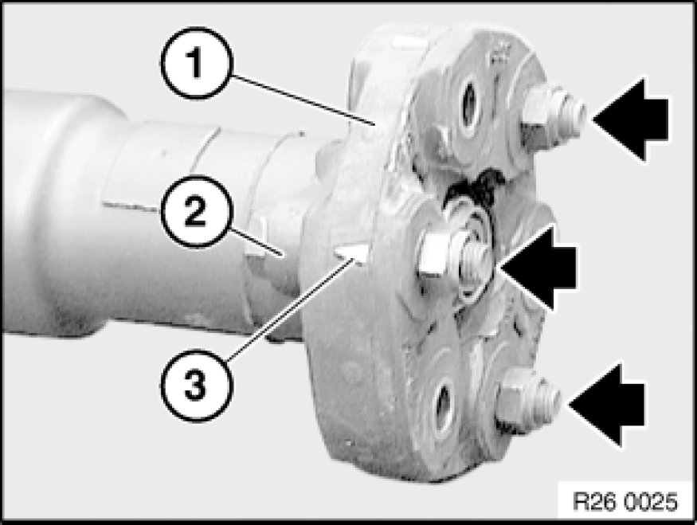

Replacing Flexible Disk for Rear Propeller Shaft
26 11 051 - Replacing flexible disk for propeller shaft

Necessary preliminary tasks:
- Remove propeller shaft Removing and Installing Propeller Shaft (Cardan Universal Joint) Completely from transmission and center bearing
Note:
To protect universal joints, tie back propeller shaft in area of center mount.

Release screws and remove flexible disc (1) from propeller shaft.
Installation Note:
- Arrows (3) on circumference of flexible disk must point to flange arms (2).
- Replace self-locking nuts.
- Tighten mounting screws of flexible disk on transmission flange by means of nuts only.
Tightening torque: 26 11 1AZ [1][2]Drive/Propeller Shaft.

Installation Note:
Check centering element, replace centering element Removing and Installing/Replacing Front Centering Mount for Propeller Shaft if damaged.
Grease centering mount.